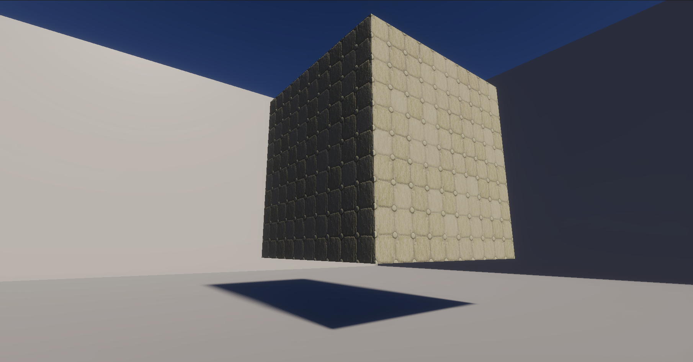
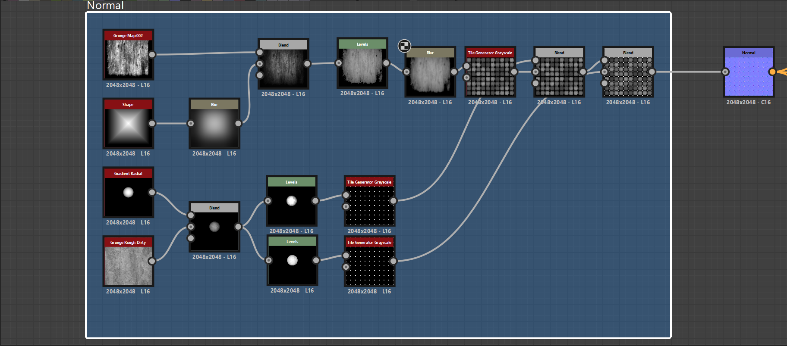
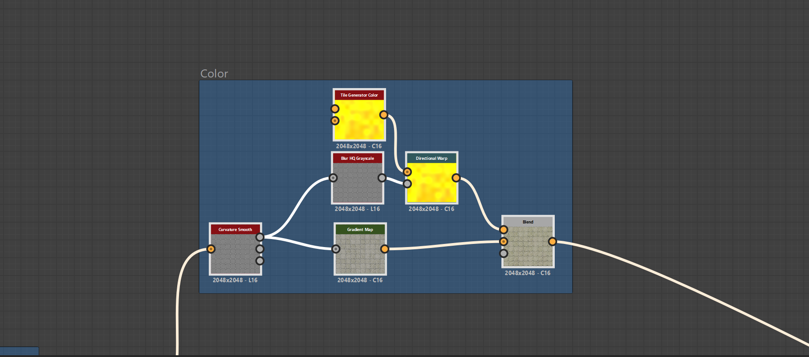

Artifact 2: Procedural Psych Ward Wall Material
This Substance 3D Designer material replicates aged psych ward walls using procedural techniques and can be implemented directly into Unity for realistic environmental texturing.

Base Material: Here is the substance within Unity using the four maps I defined for it: color, normal, height, ambient occlusion (ambient occlusion is not customized)

Normal and Height: This defines the height and how the material reacts under light, so essentially what makes it 3D, incorporating noise and basic elements to create a wall pattern.

Color: This determines the color of the material, using information taken from the normal map it can accurately apply color to the material and also incorporates randomness into the hue.